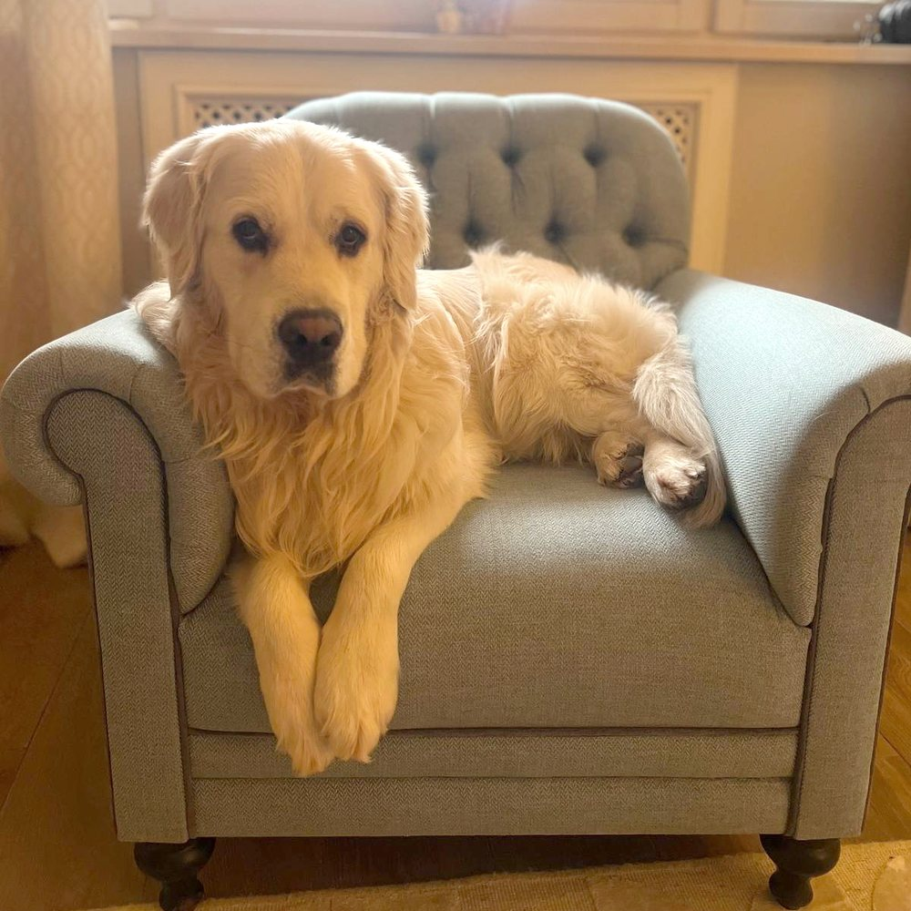
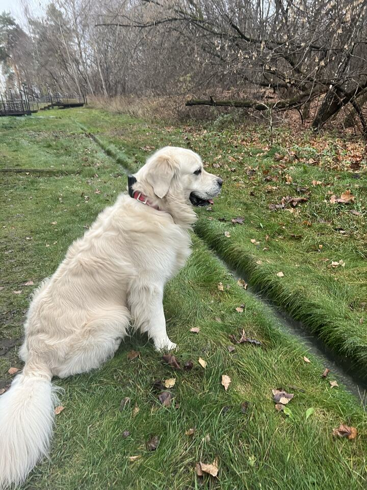
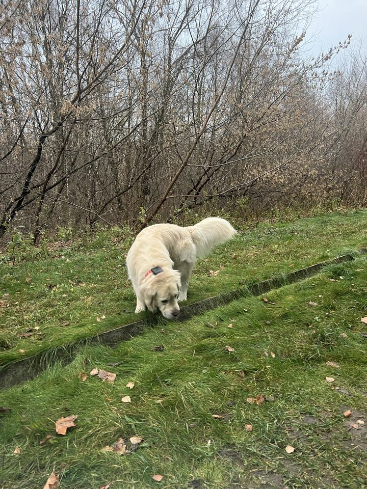
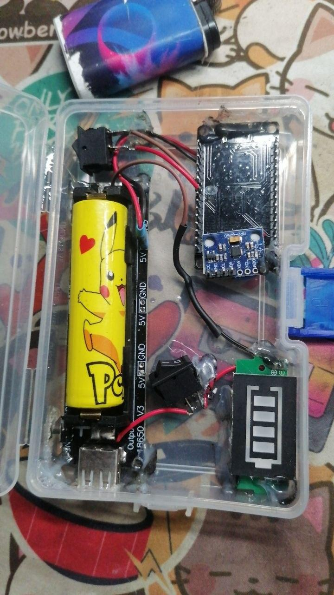
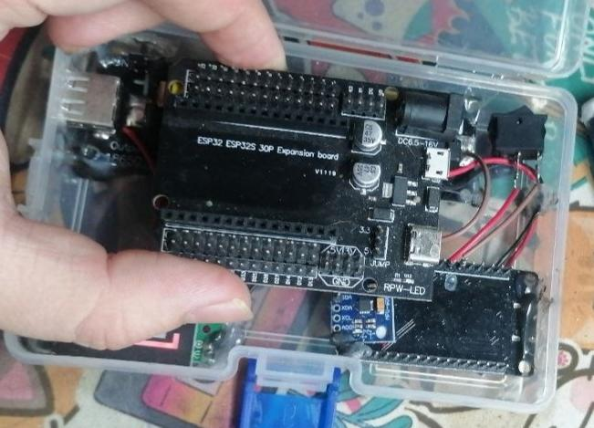
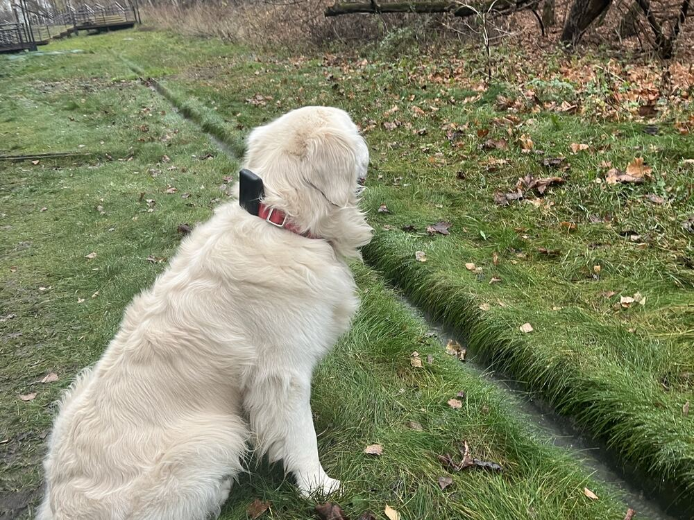

Большинство владельцев отвечают «да» и ошибаются. Если собака стала меньше двигаться, это зачастую первый признак болезни. Заметить такие изменения на ранних этапах без регулярного мониторинга почти невозможно.
Biotrek:

Это не красивая фраза, а результат научных исследований: сколько живёт собака, напрямую зависит от её веса и подвижности. Вот цифры.
Столько жизни может отнять у собаки лишний вес. Учёные наблюдали больше 50 000 собак 12 пород: полные жили заметно меньше.
Salt et al., J Vet Intern Med, 2019Настолько дольше прожили лабрадоры, которых с детства держали в форме. Знаменитый эксперимент длился 14 лет: собаки на умеренном рационе жили дольше, а болезни у них начинались примерно на 2 года позже.
Kealy et al., JAVMA, 2002Столько домашних собак весят больше нормы. Это данные ежегодного опроса ветеринарных клиник. И большинство владельцев этого просто не замечают.
Association for Pet Obesity Prevention, 2022Проблема в том, что «достаточно гуляем» это ощущение, а не измерение. Нехватка движения копится незаметно: лишний вес, скука, больные суставы. А когда собака вдруг стала меньше двигаться, это ранний сигнал боли или болезни, который легко списать на «просто ленится».
Носимый трекер снимает данные, приложение объясняет, что они значат.
Шаги и движение, круглосуточно и без участия человека. Различает отдых, прогулку и активную игру.
Не с абстрактной таблицей, а с личной нормой вашей собаки: возраст, порода, привычный ритм. Норма у чихуахуа и хаски разная.
Активность упала на треть и не восстанавливается? Приложение подскажет показать собаку врачу раньше, чем появятся явные симптомы.
Отчёт об активности можно показать ветеринару на приёме. Точные цифры вместо «вроде меньше бегает».
Это не рендер. Сверху финальный прототип в чёрном корпусе, его носит Оскар. Ниже первый этап разработки: прозрачный корпус, плата и акселерометр.




Датчик на ошейнике, приложение на телефоне и понятный отчёт, который можно показать врачу. Ничего лишнего.

Данные для хозяина
Так будут выглядеть главные экраны приложения. В примере Оскар, золотистый ретривер: его норма взята из таблицы ниже, группа «Крупные активные». Цифры условные.
Каждый вечер приложение показывает одну картинку. Разбираться в графиках не нужно: по настроению Оскара сразу видно, хватило ли ему сегодня движения.
Шаги и активные минуты за день, сравнение с привычным ритмом и подсказка, если собака двигается меньше обычного.
Неделя на фоне нормы породы. Если активность падает несколько недель подряд, приложение предложит показать график ветеринару.
Порода и норма для неё, своя цель по совету врача, заряд датчика и отчёт для ветеринара в PDF.
Ориентиры по группам пород, собранные из рекомендаций ветеринарных организаций. Шаги указаны примерно, для взрослой здоровой собаки.
| Группа пород | Примеры | Активность в день | Примерно шагов |
|---|---|---|---|
| Той-породы | Чихуахуа, йорк, той-терьер | 30–60 минут | 4–6 тысяч |
| Мелкие | Такса, ши-тцу, джек-рассел | 40–70 минут | 5–8 тысяч |
| Средние | Бигль, кокер-спаниель, шелти | 60–90 минут | 8–12 тысяч |
| Крупные активные | Лабрадор, ретривер, овчарка, хаски | 90–120+ минут | 12–18 тысяч |
| Брахицефалы | Мопс, бульдог, пекинес | 30–45 минут, дробно | 4–6 тысяч |
| Пожилые собаки | Любая порода, 7+ лет | 30–60 минут, мягко | 5–8 тысяч |
Ошейники с GPS в магазинах есть. Они отвечают на вопрос «где собака». Biotrek отвечает на другой: «как она себя чувствует».
Ошейники, которые продаются сейчас, нужны в первую очередь для поиска потерявшегося питомца. Мы делаем другое: наблюдение за самочувствием изо дня в день.
Данные можно сохранить и показать врачу на приёме. Врач увидит, как собака двигалась последние недели, а не только то, что вспомнит хозяин.
Своя инженерная разработка в Москве, Россия: поддержка, сервис и доработка под запросы пользователей без зависимости от зарубежных поставок.
Тот же принцип работает и для домашних животных, и для хозяйств. Начинаем с собак, масштабируем на КРС. Подробнее для профессионалов →
Собираем пилотную группу: владельцы собак и ветеринарные клиники.